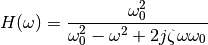
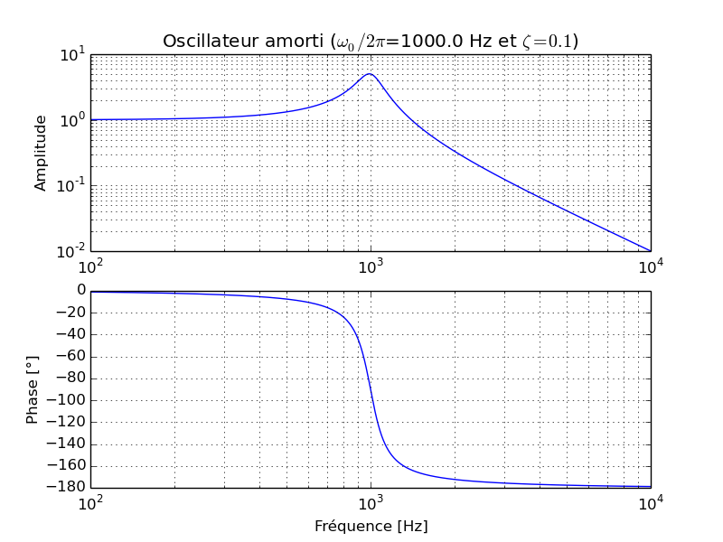
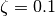
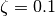
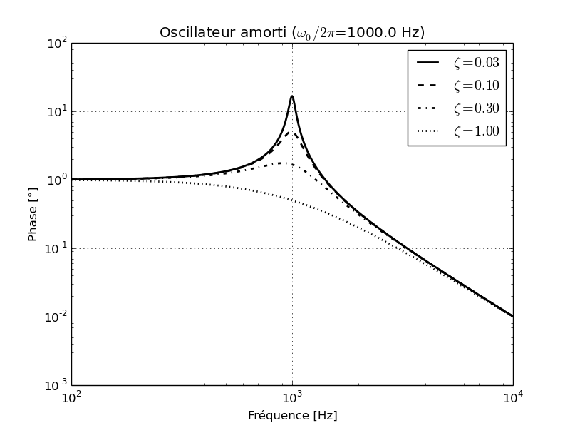
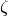
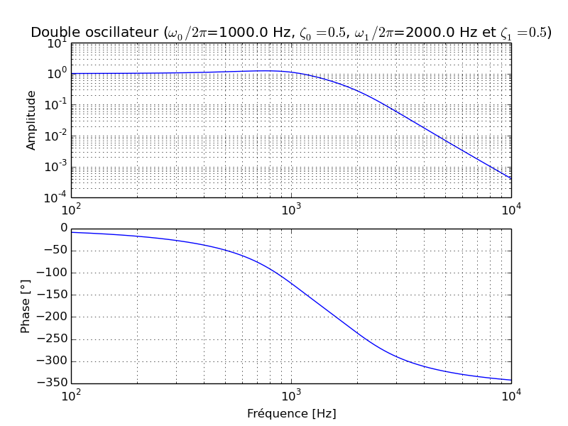
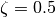
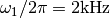

Exercises on graphics (and numpy)¶
Measurement of pi (Monte Carlo)¶
This exercise can be solved without any loop.
- Using the
randfunction, creates two array X and Y withN=1000random samples from a uniform distribution over[-1, 1[. - Plot the points
- Plot a circle of radius 1 and plot using a different color the points inside the circle.
- How many points are inside the circle ?
- The number of points is proportional to the area of the circle. Deduce an approximate value of
 . One can use
. One can use  points (without plotting the figure…)
points (without plotting the figure…)
Bode plot¶
The transfer function of a damped oscillator can written in the Fourier space using the formula :

We would like to draw the three following graphs :
Bode plot for
 and 
and Tranfer amplitude function for
 and different values of .Bode plot for the product of two tranfer function
, , , .
{kind=link}
{kind=link}
{kind=link}
You will uses the following functions :
loglogsemilogxxlabel,ylabelettitlegridsubplot(ny, nx, n)- The
labeloptional parameter and the functionlegend. - The
anglefunction of numpy can be used to calculate the phase of a complex number. For the last graph, one should modify the phase in order for the plot to be continuous (do it without any loop!).
You should also know how to
- make a string with accents (for french labels!).
- format a string to insert parameters
- For the greek letters, one can use unicode or latex formula.